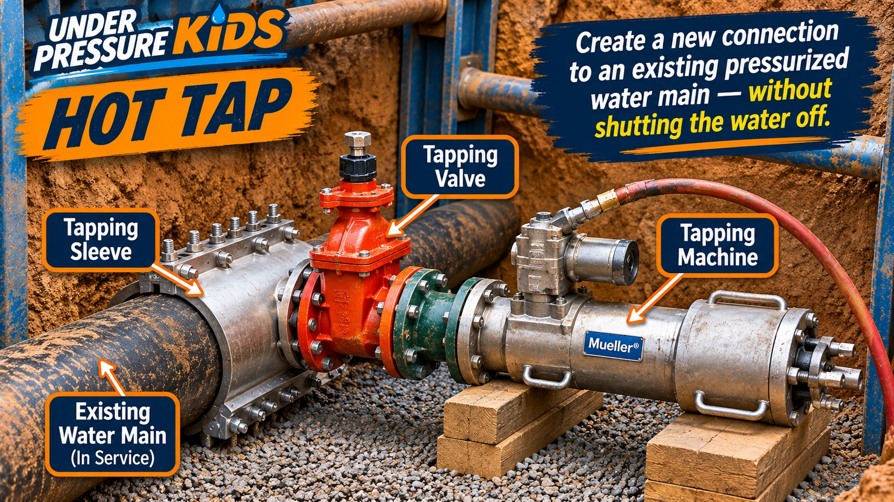

How Hot Taps Work

Select the illustration to view it at full size.
Bolt shows Max how crews add a new connection to a water main without shutting off the water.
A New Branch
Imagine a road that needs a new side street. A hot tap adds a branch to a pipe that is already carrying water. The new branch might supply a school, a neighborhood or a fire hydrant.
Keeping Water Inside
Trained crews use a sealed fitting, a valve and a special tapping machine. The equipment keeps water contained while an opening is made in the main. The new connection can then carry water when needed.
Why It Matters
Keeping the main in service can help homes and businesses avoid an interruption. Crews plan the work carefully because the water is still under pressure.
Did You Know?
Hot does not mean the water is hot. It means the pipe remains in service during the tap.
Your Next Discovery
Look for new buildings in your town. How might they connect to the water system?
Keep exploring! There’s an amazing world beneath your feet.